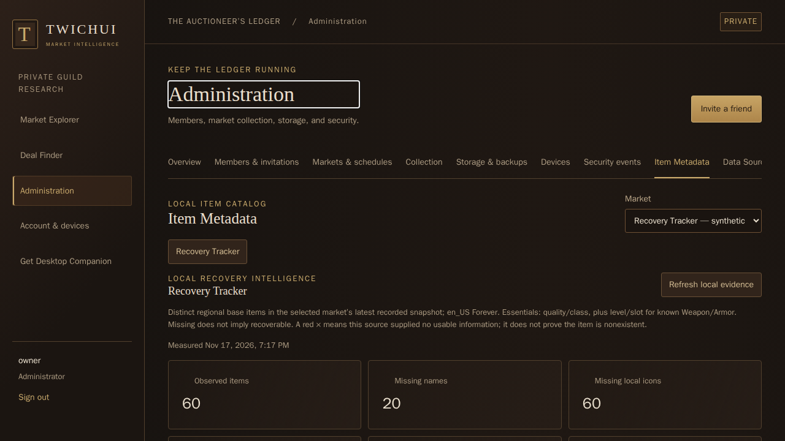
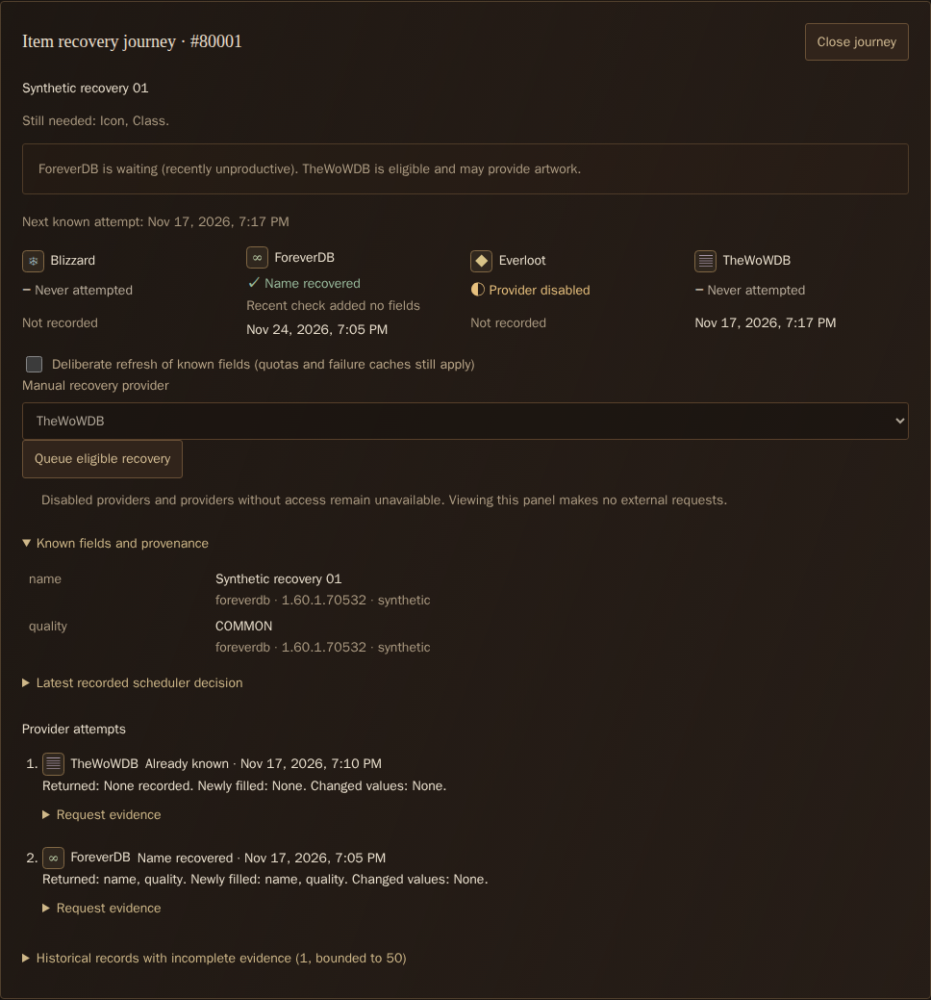
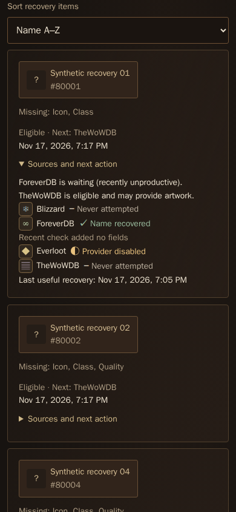
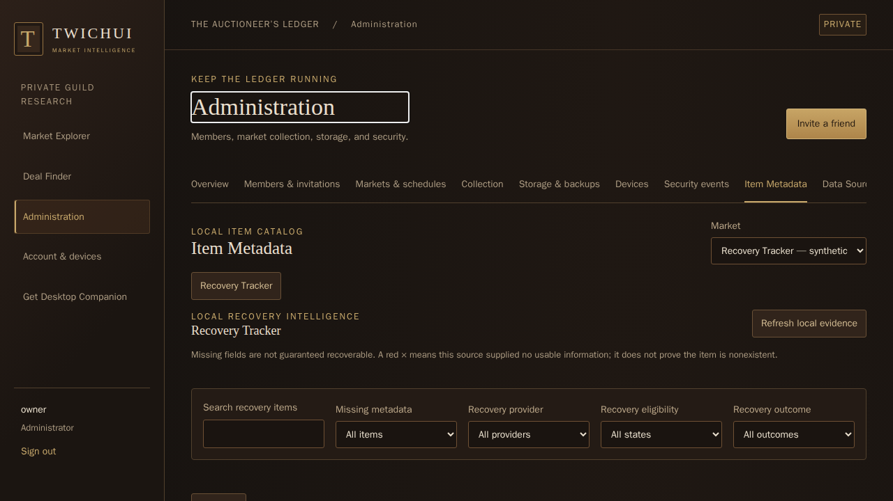
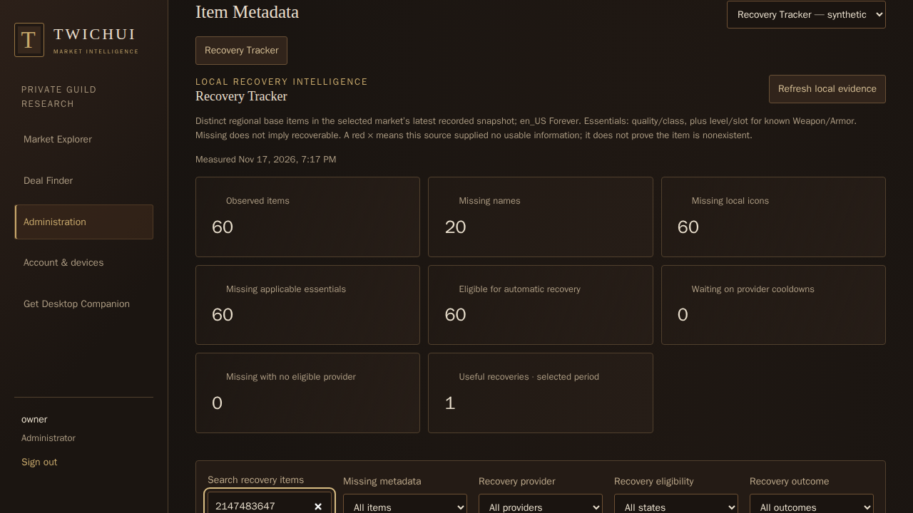
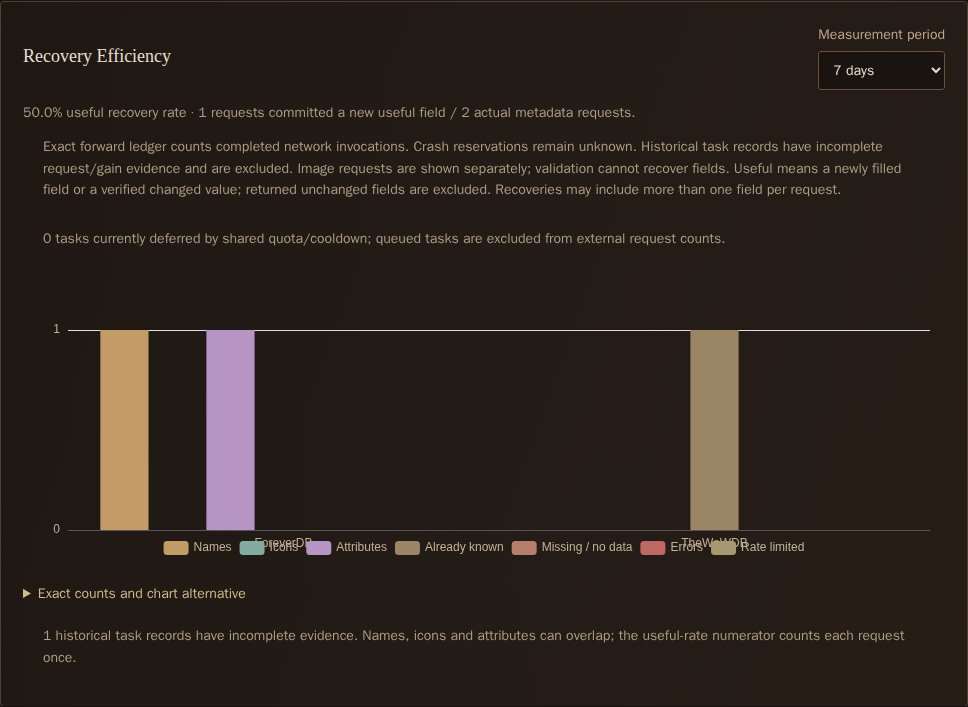

Actual Chromium rendering of an isolated synthetic market_test population. These are interface verification screenshots, not live production observations or provider efficiency evidence. No metadata worker or provider campaign ran. Counts, cooldowns, failures and gains are explicit fixtures.





